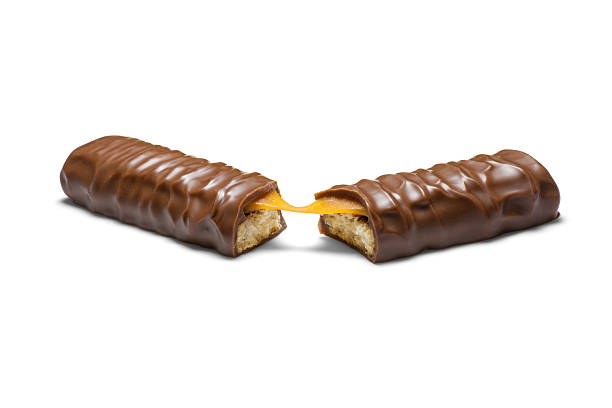

What is a Twix?

Twix is a biscuit candy bar created by Mars Inc. The Twix comes in different forms, but the most common seen is with caramel and milk chocolate. The Twix comes packaged with one (snack size), two (standard size), or four bars (king size).
History of Twix
Twix was first produced in the United Kingdom in 1967, with it later coming out in the United States in 1976, and again in 1979. The name "Twix" is a blended word of "Twin Sticks". In mainland Europe, the Twix was actually called "Raider" before its name was changed in 1991 to match the name of the brand with the rest of the world.